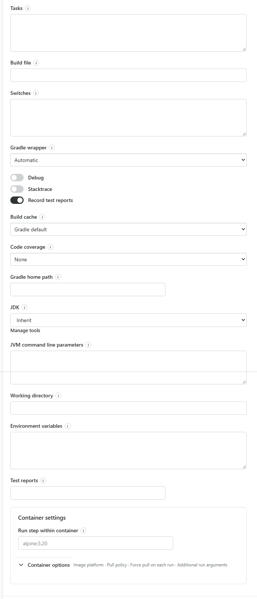

Gradle
Runs Gradle tasks with a build file and switches. It uses the project's Gradle wrapper when there is one.
When to use it
Use it for Android and Java projects, such as a mobile build of your game or a backend service. Test reports under build/test-results are recorded for you.
How to set it up
- Open the build configuration and click Settings › Build Steps.
- Click Add build step. Type
Gradlein Filter step types if you like, then click the Gradle tile (group Build tools). - Type a Step name, for example
Assemble release. - Fill in the fields described below.
- Optional: set Execute step, Conditions and Retry on failure. See The steps list and the step editor.
- Click Save.

Every field
| Field | What it does | Default | Example |
|---|---|---|---|
| Tasks | One task per line, such as clean and build. Empty runs the project's default tasks. | Empty | assembleRelease |
| Build file | Passed as -b. Empty lets Gradle find the build file. Gradle 9 removed -b: leave it empty there and set the working directory. | Empty | app/build.gradle |
| Switches | One switch per line, such as --info or -Pname=value. Pass a secret through the environment. | Empty | -PversionName=1.4 |
| Gradle wrapper | Automatic uses gradlew of the working directory when there is one, otherwise gradle. Use the Gradle wrapper fails the step if the script is missing and needs no Gradle on the agent. Use Gradle on the agent never runs a wrapper. | Automatic | Use the Gradle wrapper |
| Path to the wrapper script | Relative to the working directory, such as tools/gradlew. Empty uses gradlew. May use %name%. | Empty | tools/gradlew |
| Debug | Adds --debug. The log then holds a lot of detail: do not use it with secrets in the environment. | Off | Off |
| Stacktrace | Adds --stacktrace to print the stack trace of a failure. | Off | On |
| Record test reports | Records the JUnit XML under build/test-results of the working directory and its sub-projects, also when the build fails. | On | On |
| Build cache | Gradle default, Use the build cache (--build-cache) or Do not use the build cache (--no-build-cache). | Gradle default | Use the build cache |
| Code coverage, Include classes, Exclude classes | As in Maven. JaCoCo is fetched from the repositories of the project. | None | JaCoCo |
| JaCoCo version | The version of the JaCoCo plugin. Empty uses the default of your Gradle version. Needs Gradle 7 or newer. | Empty | 0.8.15 |
| Gradle home path | Where Gradle is installed. It replaces the project wrapper. Empty uses the wrapper, or gradle from the PATH. May use %name%. | Empty | C:\tools\gradle-8.7 |
| JDK | Inherit uses the JDK of the build configuration, or the java of the agent. A JDK from Settings › Tools sets JAVA_HOME for this step. Not available in a container: the image brings its own Java. | Inherit | JDK 21 |
| JVM command line parameters | One parameter per line, such as -Xmx2g. They go in the variable the tool reads and are added to what is set there. A parameter cannot hold a space or quote. Do not put a secret here. | Empty | -Xmx2g |
| Working directory, Environment variables, Test reports, Run step within container | The same in every runner. See Fields every runner has. |
A worked example
Build the Android release of the game's companion app. Step name Assemble release, Tasks clean and assembleRelease on two lines, Switches -PversionCode=%build.number%, Gradle wrapper Use the Gradle wrapper.
What you see when it runs
The console shows $ ./gradlew -PversionCode=57 clean assembleRelease, then Gradle's task lines. Test results are listed on the build.
Problems and fixes
| Problem | What to do |
|---|---|
| The Gradle wrapper script was not found | Check Path to the wrapper script, or choose Use Gradle on the agent. |
| Gradle was not found on this agent | Add a gradlew to the project, install Gradle there or put gradle on the PATH. |
Gradle 9 complains about -b | Empty Build file and set the Working directory. |
| No … coverage report was found | The tests may have stopped before the report was written. |